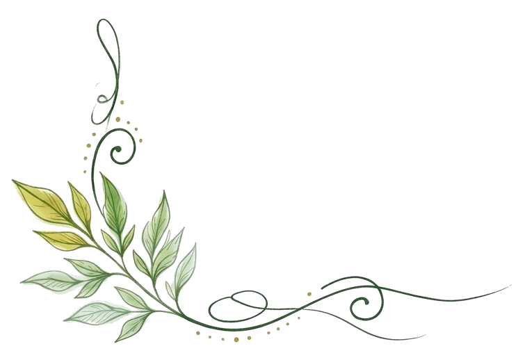

FAQ
ご高齢の方や、病気・障がいなどによりお一人での外出や移動に不安がある方にご利用いただけます。「家族だけでは付き添いが不安」「医療的なケアが必要だけれど、外出したい」「遠方へ移動したい」といったご相談にも対応しています。ご本人の状態やご希望を伺いながら、安全に実現できる方法を一緒に考えます。
通院や入退院、転院などの医療目的の移動だけでなく、旅行や冠婚葬祭、お食事、買い物、コンサート、思い出の場所への外出など、幅広く対応しています。「こんなお願いでも大丈夫かな？」という内容でも、まずはお気軽にご相談ください。
はい。必要に応じて看護師が同行いたします。お身体の状態を確認しながら、移動中の体調管理や服薬、医療的ケアなどを行います。医療依存度の高い方についても、現在の状態や必要な処置を事前に確認したうえで対応を検討いたします。
はい、ご利用いただけます。車椅子やストレッチャーでの移動にも対応可能です。介護タクシーなどの専門事業者とも連携し、ご本人のお身体の状態に合わせた移動方法をご提案します。
ご相談いただけます。酸素投与、吸引、経管栄養など、必要な医療的ケアについて事前に確認させていただきます。安全に外出できるよう、必要に応じて主治医や医療機関、ご家族とも連携しながら準備を行います。
はい、対応しています。「少しの時間でも自宅で過ごしたい」「家族と一緒に過ごしたい」というご希望に対し、病院からご自宅までの移動や、ご自宅で過ごされる時間の看護師付き添いなどもご相談いただけます。
はい。県をまたぐ長距離移動や、新幹線・飛行機を利用した移動についても対応可能です。移動手段や所要時間、ご本人のお身体の状態を確認しながら、無理のない移動計画をご提案します。
もちろん可能です。ご本人だけでなく、ご家族が安心して一緒に過ごせることも大切にしています。ご家族の人数や移動方法などについても、事前にご相談ください。
内容によって異なりますが、旅行や長距離移動などの場合は、できるだけ早めのご相談をおすすめしています。日程が迫っている場合でも、スタッフや車両の調整が可能であれば対応できる場合がありますので、まずはお問い合わせください。
外出時間や移動距離、必要なスタッフ人数、医療的ケアの内容などによって料金が異なります。ご希望やお身体の状態を伺ったうえで、事前にお見積りをご案内いたします。ご相談・お見積りの段階で内容をご確認いただき、ご納得いただいたうえでご依頼いただけます。
そのような段階でもぜひご相談ください。ご本人のお身体の状態や外出先、移動時間などを伺い、看護師の同行が必要かどうかも含めて一緒に考えます。「利用するかまだ決めていない」という場合でも大丈夫です。
はい。病院や高齢者施設、ケアマネジャー、介護タクシー事業者など、医療・介護関係者の方からのご相談も承っています。ご本人やご家族のご希望を伺いながら、必要に応じて関係機関と連携し、外出や移動のサポートを行います。

もちろんです。私たちが大切にしているのは、最初から「できる・できない」を決めることではなく、「どうしたら、その方のやりたいことを叶えられるか」を一緒に考えることです。「もう一度、家に帰りたい」「家族と旅行に行きたい」「大切な人の結婚式に出たい」「思い出の場所に行きたい」——そんな想いがありましたら、まずはお聞かせください。